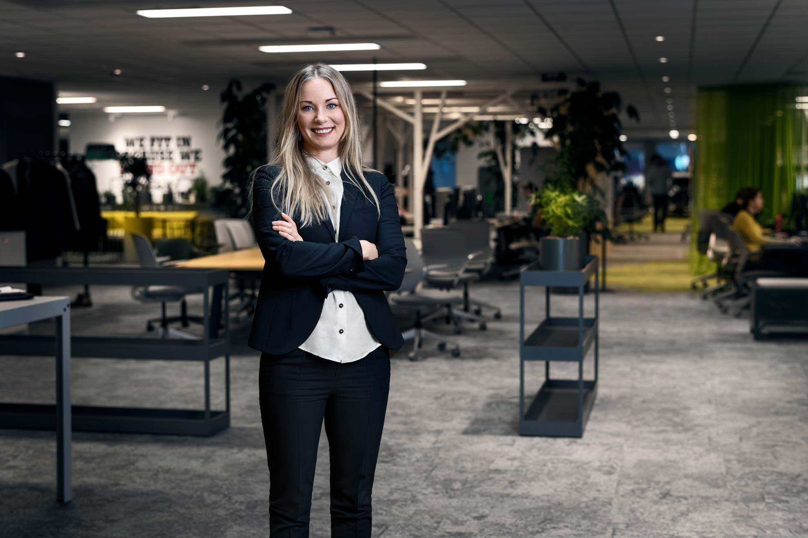
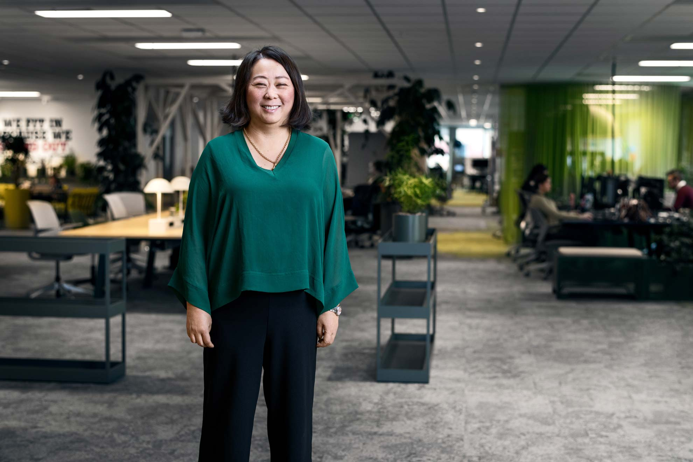

I work as Head of the Tele2 Online unit. Our unit is responsible for the development of systems, applications as well as customer experience in our digital channels. We are around fifty developers and UX designers, all in all. I manage our department and my job is to make sure that my team has the freedom to be awesome in their respective roles.
The freedom to be awesome
I started at Tele2 as a Project - and later Program Manager Consultant. I was immediately impressed by the velocity and delivery force within Tele2. I had been consulting for the public sector where you could easily spend two years on a feasibility, so Tele2 was a completely different world to me. It was the opportunity to be the proxy and to channel this force that inspired me to take on this new role. The action-oriented spirit of Tele2, the motivated individuals and the diversity of thought within the company made giving up the consultant life for a fixed position an easy choice.
I’ve always had an interest in technology and I completed my degree from the Multimedia Pedagogy and Technology-program at Stockholm University in the nineties. Since then I have worked as a Project Manager in numerous industries and taken additional courses from KTH, King's College and Brown University over the years.
Tele2 made the major part of the transition into the agile way-of-working during last year. Parallel to this, we started to implement our first fully integrated cloud solution . In the near future our main focus will be to follow through on these changes.
As an employee here at Tele2, you’ll be expected to contribute in further implementing- and improving on our agile way-of-working and partake in continuously evaluating- and improving on our technological choices. We need to both bolster our know-how with your previous experience and at the same time utilize your affinity of trying out- and evaluating new things.
Tele2 is an excellent choice if you’re serious about making an impact in your professional life – the table is nowhere near set, and your input will be both heard and appreciated.
I value transparency and I don’t expect everyone to know everything. It’s more important to ask questions, to show interest, keep learning and improve. No one will expect you to deliver perfect solutions right from the start. I will, however, expect you to be transparent and forthcoming with your ideas and concerns and to bring up important matters with your colleagues and managers.
I also want you to be responsible for driving your own development. Tele2 can offer you great career opportunities and a lot of development potential, but you need to communicate how we can support you in the best way to help you reach your goals. At Tele2 we embrace diversity so you are free to stay true to yourself, but in order to flourish at this company, you also need to be open minded, curious, collaborative and fearless.
You will be a part of a dynamic environment, working in a cross-functional team of about ten people. We strive for autonomy for both teams and employees which means that you get a great deal of responsibility and ownership of your professional contribution.
Your plan for personal development will be set down together with your closest manager. You will also be part of a "chapter" of colleagues within your profession, where you share experiences, best practice and collaborate around different ways of working.
I just got a new position as Head of Operational Excellence. We are a supporting department responsible for our agile transformation, quality, CICD, monitoring and cloud and processes.
My favorite Tele2 value is “Fearless”
I try to challenge us in meeting customer expectations by delivering high quality and stability while at the same time delivering new functions and features at a high pace. My focus is thinking ahead and proactively minimizing the risks in production.
As a leader I want to create opportunities for my teams to use their full potential. My superpower is to find talent and build strong teams were the people can grow and choose to stay because they want to.
I have a diverse background from banking and insurance. Mostly from sales and business development. The last eight years I have had the privilege to build and lead teams within retail and digital transformation.
I joined Tele2 because I liked the values and felt that they are more than empty words - they are an integral part of the culture. I am new to Tele2 and have experienced this first-hand. People are very open and have welcomed and helped me right from the start. I feel the cooperative spirit and that we’re focusing on the same goals. We are a flexible organization and are always trying to solve problems in better and more efficient ways. The Tele2 value I personally like the most is “Fearless” - which I think best summarizes us and our culture.
After joining 5 months ago I have had the chance to challenge myself with new areas in taking this new position.
We are facing the same challenges as many other companies, driving a transformation and changing way of working. We are working to build strong self- organized teams with mandate and less bureaucracy and hierarchies. We want to enable a culture that encourage innovation and learning and allows for failure, that is how we will be able to accelerate.
We are great in delivering customer value at a fast pace, but it’s very challenging balancing quality and speed in deliveries. To overcome this, it’s vital that we work to speed up automation as well as the continuous integration and continuous delivery processes.
My biggest challenge is finding the right people. In recruitment it’s important that both parties feel that it is a good match. I consider both skills and attitude when looking for a perfect fit with our values. We have done a big ramp up with consultants recently and I’m now looking to increase the ratio of employees within my unit to build a foundation to invest in. I believe strongly in the old quote: “hire for attitude, train for skill”.
I cherish curiosity and a willingness to learn in people I work with. As well as the ability to take ownership. I am looking for specialists who take responsibility and tells us what we need to do, not the other way around. You should have the drive and ambition to deliver at a high pace as well as develop your expertise. Everyone in the team needs to play their individual part, but I’d also like to emphasize the team-first mentality that we have.
There are great development opportunities at Tele2. We’re a fast-learning organization and we’re quick to implement new ideas and new technology. We’re serious about what we do, and we get things done. I believe in short and fast decision paths, and a collaborative way of working. If you deliver and show heart in what you do you can expect to be rewarded and promoted accordingly. In my unit we build teams with diverse skillsets and abilities, learning- and utilizing each other’s strengths to maximize output. There’s never a boring moment. We appreciate strong individuals that have a team-first mentality.
You will work with great people, high achievers who are passionate about their work. We believe in nurturing peoples’ passion and drives by giving them new challenges, pushing them into growing professionally and taking on bigger responsibilities.
Of course you wonder if we're as fearless as we make out. But look at our track record and see for yourself. Overcoming monopolies, taking on price wars, pioneering new markets – liberating customers from binding periods and introducing data buckets – this is what you'll find in our wake. And wherever we look we see more opportunities to set our customers free, to live smoother, more connected lives. Can you sense our spirit?
A place where you learn by doing things you wouldn't get to do anywhere else.
Now let's talk about you. You're creative, quick and courageous. So you need an organisation where you'll be liberated to think different, and do different. A place where you learn by doing things you wouldn't get to do anywhere else. Somewhere you're rewarded for your achievements, not punished for trying. And wouldn't it be great to work with like-minded folk? People who get where they are with hard work and sharp minds. You'll find them here, in all shapes and sizes.
You'll have the mandate to make decisions, to get things done and to take ownership for your endeavours. Then, by giving us your best, your best will get even better – and your true potential will see the light of day sooner than you think.
You'll have the mandate to make decisions, to get things done and to take ownership for your endeavours.
This is it – the place to explore what you're made of and challenge yourself (don't worry, we have challenges in store). Because the same people who will ask you to walk another mile will be there for you when things don't go as planned. We're a bit like an incubator for untapped talent – many successful entrepreneurs have already walked our path. Are you ready to take the leap? If you believe in yourself, this is where to do it.
Perks & Benefits
Job openings
28 october 2018
The IP Access Design department, which is partially located in Riga, is responsible for the upkeep of our office LAN within Tele2 Group. They also carry out the development, maintenance and support to our Firewall and Loadbalancer.
Stockholm Sweden
26 october 2018
The IP Access Design department, which is partially located in Riga, is responsible for the upkeep of our office LAN within Tele2 Group. They also carry out the development, maintenance and support to our Firewall and Loadbalancer.
Stockholm Sweden
26 october 2018
The IP Access Design department, which is partially located in Riga, is responsible for the upkeep of our office LAN within Tele2 Group. They also carry out the development, maintenance and support to our Firewall and Loadbalancer.
Stockholm Sweden
28 october 2018
The IP Access Design department, which is partially located in Riga, is responsible for the upkeep of our office LAN within Tele2 Group. They also carry out the development, maintenance and support to our Firewall and Loadbalancer.
Stockholm Sweden
26 october 2018
The IP Access Design department, which is partially located in Riga, is responsible for the upkeep of our office LAN within Tele2 Group. They also carry out the development, maintenance and support to our Firewall and Loadbalancer.
Stockholm Sweden
26 october 2018
The IP Access Design department, which is partially located in Riga, is responsible for the upkeep of our office LAN within Tele2 Group. They also carry out the development, maintenance and support to our Firewall and Loadbalancer.
Stockholm Sweden
There are other job openings available